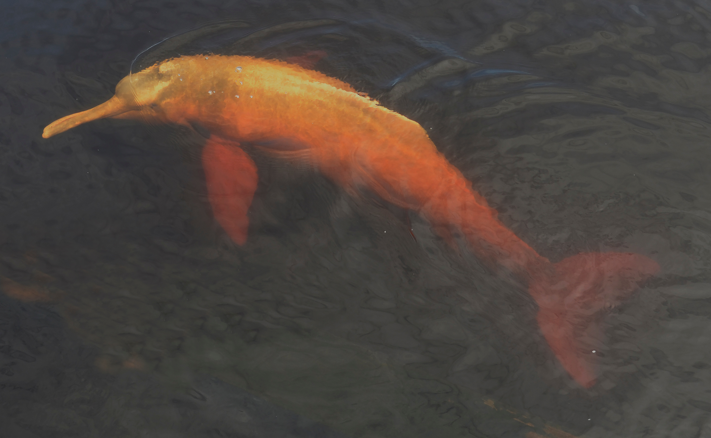

View the photo gallery below, then click through the pages to learn more about the Amazon, the play, and the mythology involved. Also enjoy interactive elements in the "Dolphins", "Play in the River", and "Belmira and Helena" sections.
Photo Gallery
Brazilian Amazon — Butterflies on the ShoreBrazilian Amazon — From Above

Pink River DolphinAmazon ForestAmazon ForestPink River DolphinRain on a LeafRain on the Amazon RiverAmazon River from AboveRiver Plant PatternsSemiaquatic CapybaraCattleya Labiata — Native Brazilian Orchid